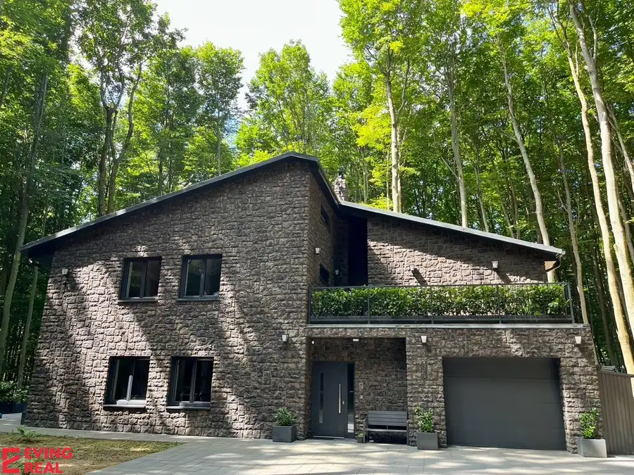
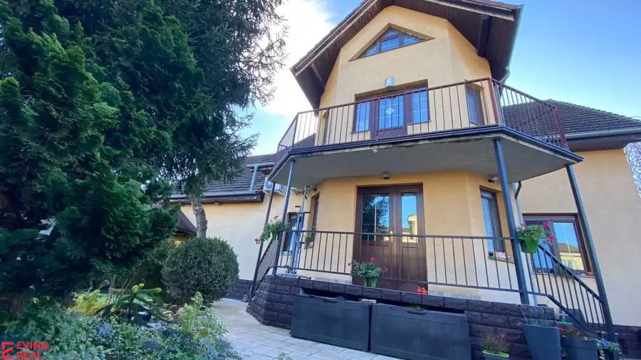
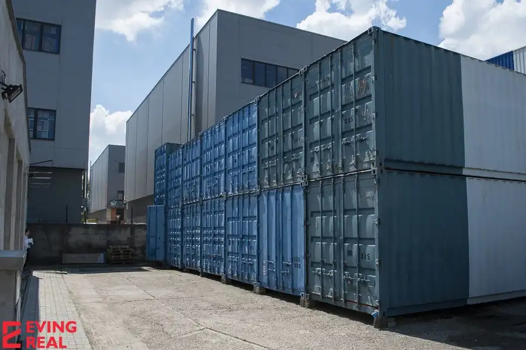
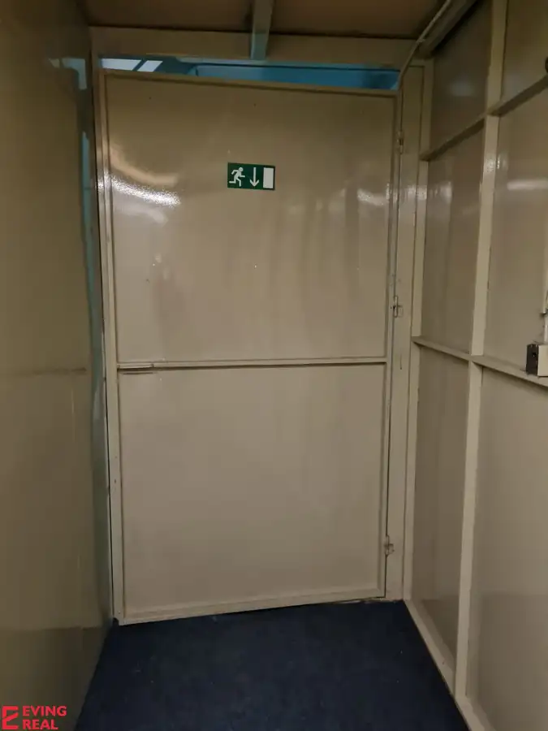
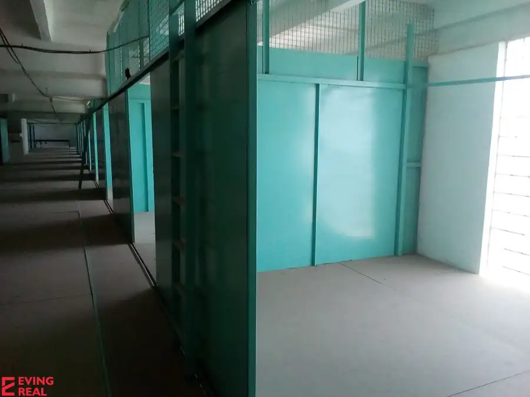
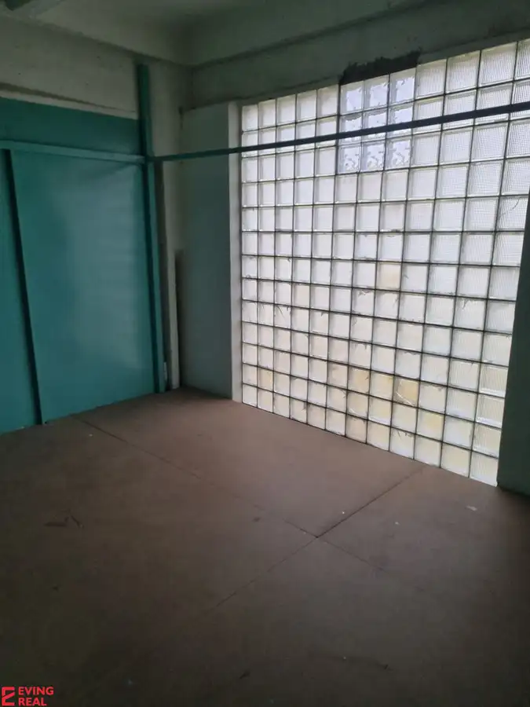
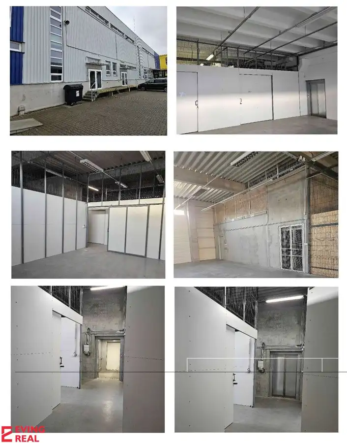
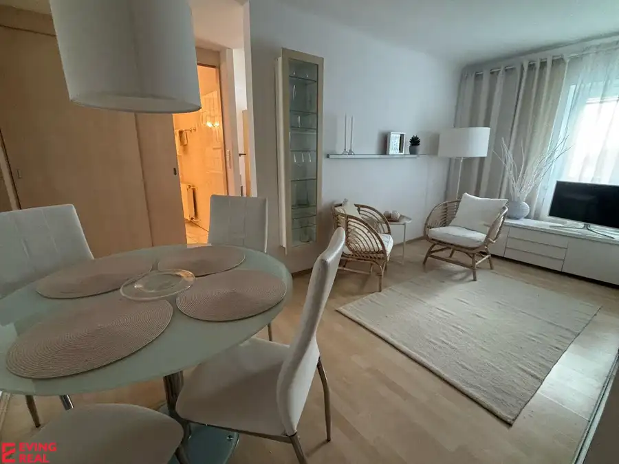

Aktuálna ponuka
Nehnuteľnosti, ktoré ponúkam
10 nehnuteľností na predaj a prenájom. Vyberte typ, alebo napíšte lokalitu.
10 z 10 ponúk

Domy a budovy10 795 000 €Predaj rodinnej vily, 8-izbovej rekreačnej chaty Modra Modra 8-izbový366.3 m² Ponúkame na predaj rodinnú vilu, 8-izbovú rekreačnú chatu s tromi podlažiami vo vyhľadávanej rekreačnej oblasti Modra Piesok priamo v lese v…
Rodinné domy10 850 000 €Dvojgeneračný 6 izb. RD, vyhľadávaná pokojná lokalita, Ružinov Ružinov, Bratislava 164 m² So súhlasom majiteľa ponúkame na predaj dvojgeneračný 6- izbový rodinný dom na Stachanovskej ulici v MČ Ružinov. Je situovaný v pokojnej tichej časti…
Nebytové priestory4 Cena dohodouPrenájom skladových kontajnerov-strážený areál, Stará Vajnorská Nové Mesto, Bratislava 28.8 m² Ponúkame na prenájom skladovacie kontajnery na Starej Vajnorskej, m.č. Nové Mesto. Skladové kontajnery o výmere 28,80 m2 (rozmery cca 2,40 x 12 m),…
Nebytové priestory Cena dohodouSklady od 2 m2 do 5 m2 v stráženom areáli Stará Vajnorská Nové Mesto, Bratislava 2 m² Ponúkame na prenájom sklady o rozlohe 2 m2 - 5 m2 Výška stropu 2,5 m. bez energií (priestor je temperovaný), na prízemí aj na poschodí. Dá sa…
Nebytové priestory3 Cena dohodouSklad 16 m2 v stráženom areáli Stará Vajnorská Nové Mesto, Bratislava 16 m² Ponúkame na prenájom skladové priestory o rozlohe 16 m2 (cca. 3,5 x 4,5 m) v stráženom areáli na Starej Vajnorskej. Sú situované na poschodí, vstup…
Nebytové priestory3 Cena dohodouSklad 18 m2 v stráženom areáli Stará Vajnorská Nové Mesto, Bratislava 18 m² Ponúkame na prenájom sklad 18 m2 ( 4,5 m x 4,5 m) v stráženom areáli na Starej Vajnorskej. Nachádza sa na poschodí. K dispozícii sú dva nákladné… Nebytové priestory2
Cena dohodouSklad /obch.priestor /kancelária/showroom, stráž.areál,Stará Vajnorská
Nové Mesto, Bratislava
90 m²
Ponúkame na prenájom priestory o rozlohe 90 m2 v stráženom areáli na Starej Vajnorskej. Miestnosť sa nachádza na poschodí. Priestor sa dá využiť na…
Nebytové priestory2
Cena dohodouSklad /obch.priestor /kancelária/showroom, stráž.areál,Stará Vajnorská
Nové Mesto, Bratislava
90 m²
Ponúkame na prenájom priestory o rozlohe 90 m2 v stráženom areáli na Starej Vajnorskej. Miestnosť sa nachádza na poschodí. Priestor sa dá využiť na…

Nebytové priestory Cena dohodouSklad /obch.priestor /kancelária/showroom, stráž.areál,Stará Vajnorská Nové Mesto, Bratislava 50 m² Ponúkame na prenájom priestory o rozlohe 50 m2 v stráženom areáli na Starej Vajnorskej. Miestnosť sa nachádza na poschodí. Priestor sa dá využiť na…
Byt10 Cena dohodouPodkrovný útulný 1 izb. byt, Lehotského 1, Staré Mesto Staré Mesto, Bratislava 1-izbový40.5 m²4. podlažie - byt sa nachádza na 4/4 poschodí - bez výťahu - kompletne zariadený, klimatizácia - okná do tichého dvora - dispozícia bytu: vstupná chodba, WC,… Nebytové priestory3 Cena dohodouSklad 52 m2 v stráženom areáli Stará Vajnorská Nové Mesto, Bratislava 52 m² Ponúkame na prenájom skladové priestory o rozlohe 52 m2 (cca. 11,5 m x 4,5 m) v stráženom areáli na Starej Vajnorskej. Sú situované na poschodí,…Tomuto výberu zatiaľ nezodpovedá žiadna ponuka. Napíšte mi, čo hľadáte.